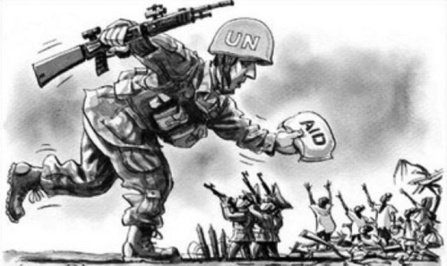
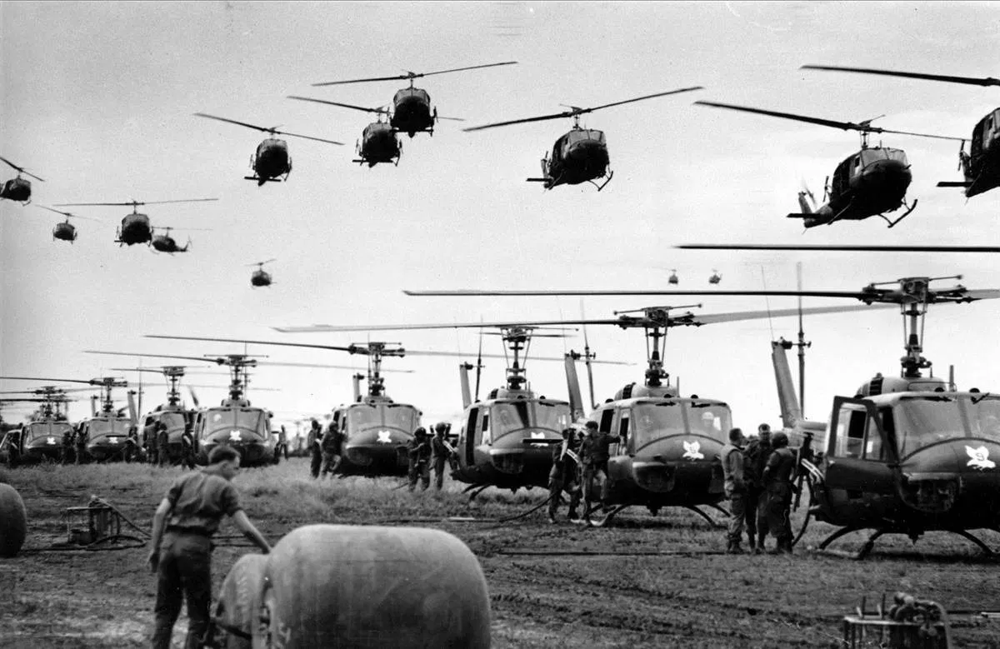
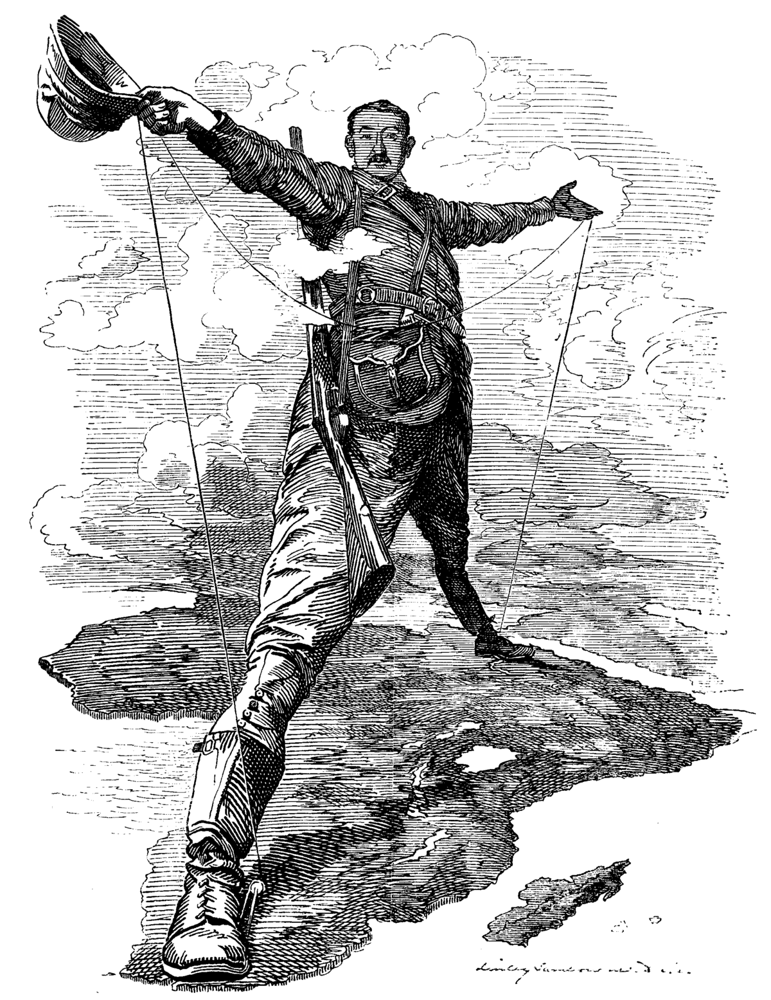
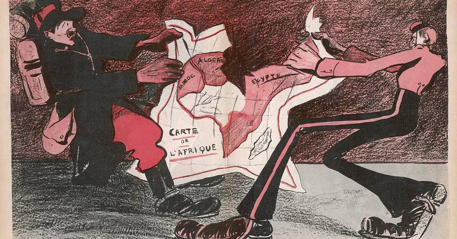
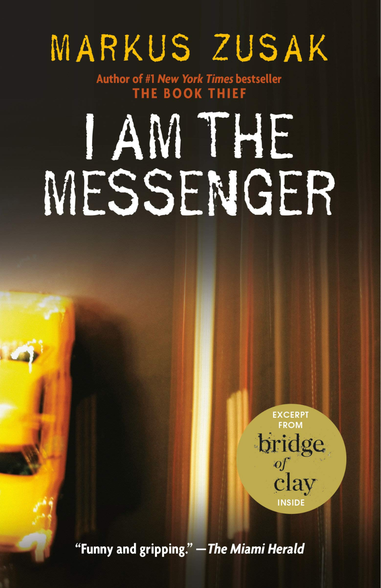
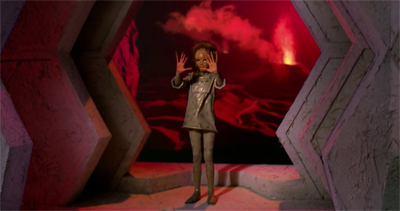

Information and Sources
Chatterjee has decided to write an entire novel based on foreign intervention and the ethicality of committing it. Mainly based around the more recent military interventions, where armies have stepped in to try and prevent battles, Chatterjee comes to the conclusion that intervention just leads to more fighting, war, and schisms. Chatterjee gives many wars to back up his claim, but fails somewhat to explain why it leads to war, or to give any example of an intervention that might counter his ideas. This is however one of the most authentic sources we have and should be considered to hold some of the most importance.
In The Rise of our East African Empire the author, Lugard, makes the argument that foreign intervention and imperialism is a great movement because it creates a growing market and allows for empires and free markets to expand. “To allow other nations to develop new fields, and to refuse to do so ourselves, is to go backward; and this is the most deplorable,” he says. There is one major issue in this article, however, and that has to do with the inclusion of the African’s Perspective. The author fails to recognize any of the problems or point of views of the Africans in which they are being controlled for profit. He argues for foreign intervention as the economy and wealth of his country is significantly improved by it, but this intervention is obviously not in good faith when he says things such as, “seeing that we have proved ourselves notably capable of dealing with native races and of developing countries at a less expense than other nations.” This source shows an abuse of foreign intervention, and while Lugard himself may be expressing the benefits of it, there is an underlying factor of greed and deception.
Morel constructs a piece of literature in The Black Man’s Burden that shows the dark side of foreign intervention. Morel speaks up and states that the countries coming into the Africans' lives has been very destructive, especially in the Belgian colony of Congo. In his poem, he writes that “In Africa, especially in tropical Africa, which a capitalistic imperialism threatens and has, in part, already devastated, man is incapable of reacting against unnatural conditions.” He also says that enslavement kills the soul and should be considered a crime worse than murder. “To reduce all the varied and picturesque and stimulating episodes in savage life to a dull routine of endless toil for uncomprehended ends, to dislocate social ties and disrupt social institutions; to stifle nascent desires and crush mental development; to graft upon primitive passions the annihilating evils of scientific slavery, and the bestial imaginings of civilized man, unrestrained by convention or law; in fine, to kill the soul in a people-this is a crime which transcends physical murder,” he says. These quotes both show significant negative impacts on the environment and the people in developing nations as a result of foreign intervention. Morel doesn’t explain how Belgium is benefiting from their intervention in the Congo, but this doesn’t necessarily matter when the intentions of foreign intervention are malicious.
Markus Zusak depicts in his book that in certain situations, foreign intervention is a very beneficial and helpful practice no matter the situation. It is important that if one is to intervene, for it to be done in a non-boastful manner and to make sure to examine the situation before engaging. However, his validity could be discredited considering foreign intervention was not at the heart of his ideals. A story without the main intention of discussing foreign intervention might not be the best course of examination. Zusak is also not an ethics practitioner, so we can’t discern whether or not he knows what he is talking about.
In the Star Trek episode “Pen Pals” we witness a major example of foreign intervention in front of us. The crew's command was to not interfere with any foreigners, but after they calculated and debated whether they should save a planet about to be destroyed. they conclude it would be better to save the planet instead of remaining quiet. In the episode, there were many arguments provided both for and against foreign intervention, but in the end, they decided that it was in the best interest to save the planet. Star Trek, however, is a fictional story and thus not everything we see in the episode is fully representative of real life events, but it does provide an argument for our dilemma.
Peter Singer makes for us a Ted Talk in which he discusses his opinions on why if we want to be the most beneficial people, then we should follow the ideals of effective altruism. Effective altruism is a way for people to examine a given situation and find the best and most helpful outcome. One of the main premises is that it also states that people can think about helping others from all across the world, no matter how far you are. This connects to our question because foreign intervention is an idea that revolves around being across the world, and effective altruism is exactly about that.
Variety
The sources we chose are from a wide variety of mediums, voices, and times. From the sources we chose we have an episode from a television show, a book, a speech, a poem, and two academic books. Because we are not using academic sources, these differing mediums will provide us with a large abundance of variety. All these sources directly or indirectly target the validity of foreign intervention which is the purpose of our essential question. It is also important that we chose sources with different opinions on the benefit of foreign intervention in order to get perspectives from many sides.
Conversation between sources
The sources show a lot of varying responses to our dilemma, but there are a few that stand out or overlap between sources. In the example of “The Rise of Our East African Empire,” Lugard argues that German imperialism in Africa helps benefit Germany, and that if they didn’t invest in imperialism, then they would not be able to progress and would fall behind. The article shows how some, more powerful, nations can benefit from foreign intervention and that it is required to progress markets, but there are some very detrimental effects of the foreign intervention mentioned in the article, especially on the colonized regions in Africa. This can be directly seen in “The Black Man’s Burden,” when Edward Morel says that imperialism has devastated nations in tropical Africa, specifically in the Belgian colony of Congo. He says that the enslavement of Africans crushed mental development and is a crime worse than murder. This shows that while foreign intervention and the use of imperialism in Africa by European nations has given them a boost in their economies, it has devastating impacts on those affected by foreign intervention.
In Star Trek: The Next Generation episode “Pen Pals,” multiple arguments are provided both for and against foreign intervention, but there is one main argument that is more explored than the rest. One argument is not entirely for or against foreign intervention. It says that foreign nations should not intervene with the exception of when the presented situation leads to the deaths of millions of people. The next argument is that foreign intervention should not be used at all because of the world’s history of foreign intervention leading to wars and enslavement of others. The underlying argument that is the most present, however, is that foreign intervention should only be used if the people who are intervening have good intentions. In the story, there is a geological catastrophe that is going to kill upwards of millions of people, and the people of the Enterprise have the ability to prevent this catastrophe from occurring, so they decide to step in and help prevent this catastrophe. Deen Chatterjee goes into more detail about these ideas in “Ethics and Foreign Intervention.” This source goes into detail on the different types of intervention and how intervention can be both helpful and harmful. They say that military intervention can lead to more conflict is generally not an effective way of helping, but humanitarian intervention, on the other hand, is much more beneficial and helpful. They say that the time to intervene needs to be well thought out and planned beforehand as well in order to make it effective.
In Peter Singer’s Ted Talk “The Why and How of Effective Altruism,” he says that intervention should be used in situations where help is needed. He says it is more efficient to try to be the most effective, which will help prevent bad outcomes from occurring. This is similar to the message presented in Markus Zusak’s “I Am the Messenger” because there is a message that is presented (but not explicitly stated that supports intervention. By Zusak’s presentation in the book, it would seem that in any situation that a person intervenes, it results in a better outcome than one staying as a bystander. In other words, the intervention of a foreigner (the Main Character) is valid and results in a good outcome to those in terrible situations.
Works Cited
Chatterjee, Deen K. Ethics and Foreign Intervention. Cambridge Univ. Press, 2006.Lugard, F. D. “The Rise of Our East African Empire.” Forham University, Modern History Sourcebook, 1893,sourcebooks.fordham.edu/mod/1893lugard.asp
Morel, Edward. The Black Man's Burden. 1903, www1.udel.edu/History-old/figal/Hist104/assets/pdf/readings/12blackmanburden.pdf
“Pen Pals” Star Trek: The Next Generation. Created By Gene Roddenberry, season 2, episode 15, CBS, 1989
Singer, Peter. “The Why and How of Effective Altruism.” TED, TED: Ideas Worth Spreading, Mar. 2013, www.ted.com/talks/peter_singer_the_why_and_how_of_effective_altruism?language=en.
Zusak, Markus. I Am the Messenger. KNOPF, 2002.